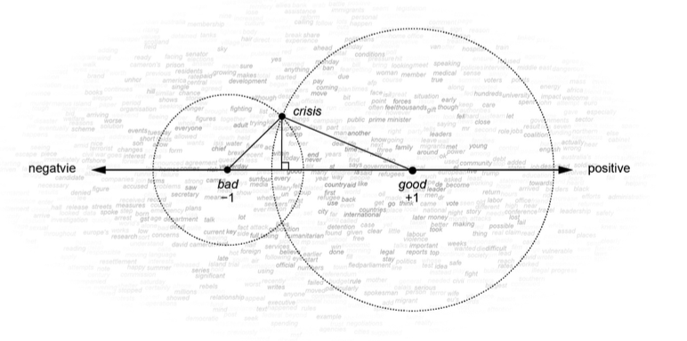
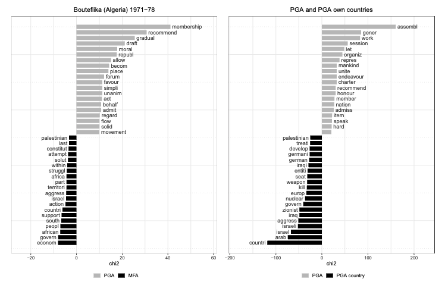

Introduction to Latent Semantic Scaling
February 4, 2026
What is Latent Semantic Scaling?
A semi-supervised scaling technique (Watanabe 2021).
The user provides seed words to define the scale.
The algorithm estimates polarity of words in the corpus based on their semantic proximity to seed words.
Documents are then located on a unidimensional scale.
Why LSS?
- Requires only a small set of seed words regardless of the size of the corpus
- Learns the semantic relationship between words without manual supervision
- Works well for non-European languages
- Fitted with the entire corpus –> independent of temporality of language usage –> great for longitudinal analysis
Seed Words
Seed words are a small set of words that users choose to define the quantity that LSS measures.
Good seed words should have:
- strong polarity
- small ambiguity
- corpus independence
Seed Words Examples
| Source | “+1 Pole” | “-1 Pole” |
|---|---|---|
| Trubowitz and Watanabe (2021) | Hostile: “adversary,” “enemy,” “foe,” “hostile | Friendly: “aid,” “ally,” “friend,” “peaceful” |
| Watanabe (2021) | Positive: “good’,”nice”, “excellent”, “positive”, “fortunate”, “correct”, “superior” | Negative: “bad”, “nasty”, “poor”, “negative”, “unfortunate” |
Seed Words Selection
Make a list of candidate polarity words related to the target dimension.
Select candidates that have the strongest polarity and the smallest ambiguity.
Fit a LSS model with only one candidate and test if polarity scores of words are intuitively correct.
Combine all the candidates that pass the checks to form a seed word set
Check the validity of seed words by comparing scores produced by manual and machine coding.
Polarity Scores of Words in Corpus
LSS employs the word-embedding technique to estimate semantic proximity between seed words and other words in the corpus.
Word-embeddings produce low-dimensional representations of word semantics, “word vectors”, based on cooccurrences of words within sentences or word-windows.
After obtaining word vectors, LSS computes polarity scores of words based on their proximity to seed words, weighted by their user-provided polarity.
Word Weighting Illustration
Conceptual illustration of word weighting by seed words. The arrow is the sentiment dimension in the semantic space and circles are proximities of positive seed (“good”) words and negative seed words (“bad”) to “crisis”, which is projected on the sentiment dimension (Watanabe 2021, 86).
Polarity Scores Illustration

Distribution of polarity scores and word frequencies on the “hostility” dimension (Trubowitz and Watanabe 2021, 858).
Polarity Scores of Documents
LSS predicts polarity scores of documents by weighting word polarity scores by their frequency in the documents.
Documents’ polarity scores are continuously and symmetrically distributed around the mean, so they are recentered by the global mean, μ = 0, and rescaled by standard deviation, σ = 1, to make it easier for users to interpret.
\(\rightarrow\) great for post-hoc regression analysis to incorporate covariates.
Application Examples 1
| Article | Dimensions & seed words | Data |
|---|---|---|
| Trubowitz and Watanabe (2021) | “Hostility” (+1: “adversary,” “enemy,” “foe,” “hostile; −1: “aid,” “ally,” “friend,” “peaceful”) | New York Times news summaries (N = 387,896) |
| Rauh (2021) | “Emergency” vs “Normality” (+1: “emergency”, “crisis”, “danger”, “peril”, “hazard”, “threat”, “risk”, “disaster”, “uncertainty”, “uncertain”; -1: “normality”, “normal”, “safety”, “stability”, “regularity”, “routine”, “calm”, “usual”, “certainty”, “certain”) | Speeches of EU leaders and heads of states (N = 19,541) |
Application Examples 2
| Article | Dimensions & seed words | Data |
|---|---|---|
| Baturo and Gray (2024) | “Global agenda” rhetoric (“cooperat,” “global,” “agenda,” “united nations,” “organization”, “assembly”) | Speeches from the United Nations General Assembly (1946-2019), grouped by speakers (N = 9,959) |
| Baturo, Khokhlov, and Tolstrup (2024) | “Putin’s agenda” (“putin,” “sovereign,” “tradition-,” “crimea,” “ukraine,” “patriot-,” “victory,” “fascis-”) | Annual regional legislative addresses by governors in Russia, 2007-2021 (N = 924) |
Analytical Pipeline Example

Phases of semi-supervised classification of text (Trubowitz and Watanabe 2021).
Example: Polarity Scores
| Seed words |
|---|
| “cooperat,” “global,” “agenda,” “united nations,” “organization”, “assembly” |

Example: Keyness as a Validation
Lexical difference (Baturo and Gray 2024, 735). Note: The keyness analyses isolate words that frequently appear in a given text(s), capturing the degree to which a given word is “key” overall, in contrast to another text(s).
LSS Weaknesses
Not as robust to external corpora as the dictionary approach because it estimates semantic proximity between words on the given corpus only.
Predicts individual polarity scores with relatively large errors, esp. in short documents, because it is a linear and naive model.
But grouped LSS scores (e.g., by speaker) are strongly correlated with manual scores in tests \(\rightarrow\) measurement errors are negligible in aggregated-level analysis